Una katana (刀, かたな; literalmente “hoja de un solo filo”) es una espada japonesa caracterizada por
una hoja curva de un solo filo, una guarda circular o cuadrada y una empuñadura larga que permite
usarla con ambas manos. Se desarrolló después del tachi y fue utilizada por los samuráis en el Japón
feudal, llevándose con el filo orientado hacia arriba. Desde el período Muromachi, muchos tachi
antiguos fueron cortados desde la base y acortados, y la parte inferior de la hoja fue modificada
para convertirlos en katanas. El término específico para katana en Japón es uchigatana (打刀, うちがたな;
literalmente “espada de golpe”), y la palabra katana (刀) a menudo se usa para referirse a espadas de
un solo filo de diferentes partes del mundo.
Katana
Longitud promedio: 60cm – 80cm
Peso aproximado: 1.1kg – 1.5kg
Tipo de hoja: Curva, un filo
Uso principal: Corte
Etimología
La palabra katana aparece por primera vez en japonés en el Nihon Shoki del año 720. El término es un compuesto
de kata (“un lado” o “de un solo lado”) y na (“hoja”), en contraste con la tsurugi, que tiene doble filo.
La katana pertenece a la familia de espadas nihontō y se distingue por tener una longitud de hoja (nagasa)
superior a 2 shaku, aproximadamente 60 cm.
Entre los entusiastas occidentales de las espadas, la katana también puede llamarse dai o daitō, aunque daitō es
en realidad un término genérico para cualquier espada japonesa larga y significa literalmente “espada grande”.
Como el japonés no tiene formas separadas para plural y singular, tanto katanas como katana se consideran formas
aceptables en inglés.
Pronunciada [katana], es la lectura kun’yomi del kanji 刀, que originalmente significaba “hoja de un solo filo”
(de cualquier longitud) en chino. La palabra también fue adoptada como préstamo en portugués; en ese idioma la
designación catana significa “cuchillo grande” o “machete”.
Descripción
La katana se define generalmente como la espada japonesa estándar, de curvatura moderada (a
diferencia de la tachi, más antigua y con mayor curvatura) y con una longitud de hoja mayor a 60.6
cm (23.86 pulgadas), es decir, más de 2 shaku. Se caracteriza por su apariencia distintiva: una hoja
curva, delgada y de un solo filo, con una guarda circular o cuadrada (tsuba) y un mango largo que
permite usarla con dos manos.
Con pocas excepciones, la katana y la tachi pueden distinguirse, si están firmadas, por la ubicación
de la firma (mei) en la espiga de la hoja (nakago). En general, el mei se talla en el lado del
nakago que quedaría hacia afuera cuando la espada se lleva puesta. Como la tachi se llevaba con el
filo hacia abajo y la katana con el filo hacia arriba, el mei aparece en lados opuestos de la
espiga.
Historiadores occidentales han afirmado que las katanas estuvieron entre las mejores armas de corte
en la historia militar mundial. Sin embargo, las armas principales en el campo de batalla durante el
siglo XVI, en el período Sengoku, eran el yumi (arco), el yari (lanza) y el tanegashima (arma de
fuego), mientras que la katana y la tachi se utilizaban principalmente para combate cercano.
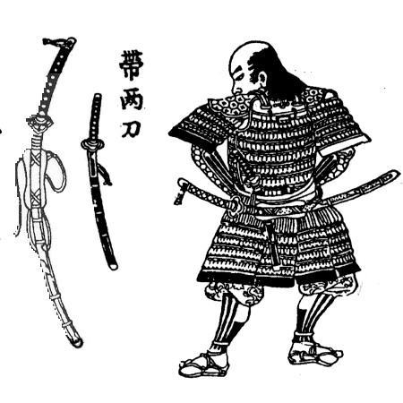
Una espada de la cultura Cogotas II de la Edad del Hierro en España.
Durante este período, las tácticas cambiaron hacia batallas en grupo realizadas por ashigaru (soldados de
infantería) movilizados en grandes cantidades, por lo que la naginata y la tachi quedaron obsoletas como armas
de campo de batalla y fueron reemplazadas por el yari y la katana. En el relativamente pacífico período Edo, la
katana aumentó su importancia como arma, y hacia el final de ese período los shishi (activistas políticos)
lucharon en muchas batallas usando la katana como su arma principal.
Las katanas y las tachi también se utilizaban frecuentemente como regalos entre daimyo (señores feudales) y
samuráis, como ofrendas a los kami consagrados en los santuarios sintoístas, y como símbolos de autoridad y
espiritualidad del samurái.
Historia
La producción de espadas en Japón se divide en períodos de tiempo específicos:
Jōkotō (espadas antiguas, hasta alrededor del año 900)
Kotō (espadas antiguas, aproximadamente del 900 al 1596)
Shintō (espadas nuevas, 1596–1780)
Shinshintō (espadas más nuevas, 1781–1876)
Gendaitō (espadas modernas o contemporáneas, 1876–presente)
Kotō (Espadas Antiguas)
LLa katana se originó a partir del sasuga (刺刀), un tipo de tantō (espada corta o cuchillo) utilizado
por los samuráis de rango inferior que combatían a pie durante el período Kamakura (1185–1333). Su
arma principal era la naginata larga, y el sasuga se utilizaba como arma de reserva. En el período
Nanboku-chō (1336–1392), que corresponde al inicio del período Muromachi (1336–1573), las armas
largas como el ōdachi se volvieron populares y, junto con esto, los sasuga se fueron alargando
gradualmente hasta convertirse finalmente en katanas.
También existe la teoría de que el koshigatana (腰刀), otro tipo de tantō que los samuráis de alto
rango llevaban junto con la tachi, se desarrolló hasta convertirse en katana debido al mismo
contexto histórico que el sasuga, y es posible que ambos evolucionaran hacia la katana. La katana
más antigua que existe hoy se llama Hishizukuri uchigatana, la cual fue forjada durante el período
Nanbokuchō y posteriormente fue dedicada al Santuario Kasuga.
El primer uso de la palabra katana para describir una espada larga diferente de la tachi aparece ya
en el período Kamakura. Estas referencias a “uchigatana” y “tsubagatana” parecen indicar un estilo
diferente de espada, posiblemente una espada menos costosa para guerreros de menor rango.
A partir de alrededor del año 1400, comenzaron a fabricarse espadas largas firmadas con el mei
(firma) al estilo katana. Esto ocurrió en respuesta a que los samuráis comenzaron a llevar sus tachi
de una forma que hoy se conoce como “estilo katana” (con el filo hacia arriba). Las espadas
japonesas se llevan tradicionalmente con el mei mirando hacia afuera del portador. Cuando una tachi
se llevaba al estilo katana, con el filo hacia arriba, su firma quedaba en la posición incorrecta.
El hecho de que los herreros comenzaran a firmar las espadas con una firma al estilo katana
demuestra que algunos samuráis de esa época empezaron a llevar sus espadas de una manera diferente.
Para el siglo XV, las espadas japonesas, incluyendo la katana, ya habían adquirido fama
internacional y se exportaban a China y Corea. Por ejemplo, Corea aprendió a fabricar espadas
japonesas enviando herreros a Japón e invitando a herreros japoneses a Corea. Según un registro del
1 de junio de 1430 en los Registros Verídicos de la Dinastía Joseon, un herrero coreano que viajó a
Japón y dominó el método de fabricación de espadas japonesas presentó una espada japonesa al rey de
Corea y fue recompensado por su excelente trabajo, que no era diferente de las espadas hechas por
los japoneses.
Tradicionalmente, el yumi (arco) era el arma principal de guerra en Japón, y la tachi y la naginata
se utilizaban solo para combate cercano. La Guerra Ōnin a finales del siglo XV, durante el período
Muromachi, se expandió hasta convertirse en una guerra civil a gran escala, en la cual campesinos
reclutados llamados ashigaru fueron movilizados en grandes cantidades. Estos luchaban a pie usando
katanas más cortas que las tachi.
En el período Sengoku (período de los estados en guerra), hacia el final del período Muromachi, los
conflictos se volvieron aún más grandes y los ashigaru luchaban en formaciones cerradas usando yari
(lanzas) que se les prestaban. Además, a finales del siglo XVI, los tanegashima (mosquetes) fueron
introducidos desde Portugal, y los herreros japoneses comenzaron a producir en masa versiones
mejoradas, mientras que los ashigaru luchaban con armas de fuego alquiladas.
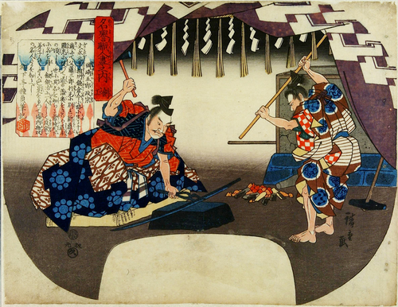
Masamune forjando una katana con un asistente (ukiyo-e).
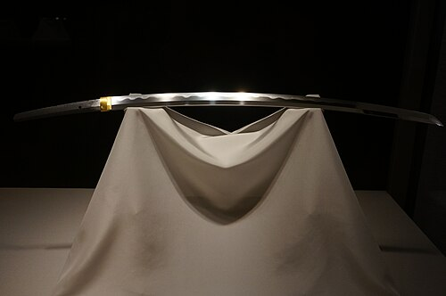
Una katana de la escuela Sōshū, modificada a partir de una tachi forjada
por Masamune. Como perteneció a Ishida Mitsunari, se la conocía comúnmente como Ishida
Masamune. Propiedad Cultural Importante. Museo Nacional de Tokio.
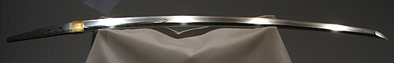
Muramasa (勢州桑名住村正) del Museo Nacional de Tokio.
En el campo de batalla en Japón, las armas de fuego y las lanzas se convirtieron en las armas principales junto
con los arcos. Debido a estos cambios en los estilos de combate durante estas guerras, la tachi y la naginata
quedaron obsoletas entre los samuráis, mientras que la katana, que era fácil de transportar, se convirtió en el
arma predominante. La vistosa tachi pasó gradualmente a ser un símbolo de la autoridad de los samuráis de alto
rango.
Por otro lado, se desarrolló el kenjutsu (esgrima japonesa), que aprovecha las características de la katana. La
extracción más rápida de la espada era muy adecuada para el combate, donde la victoria dependía en gran medida
de tiempos de reacción muy cortos. (La práctica y arte marcial de desenfundar la espada rápidamente y responder
a un ataque repentino se llamaba battōjutsu, disciplina que todavía se mantiene viva a través de la enseñanza
del iaidō).
La katana facilitaba esto al llevarse introducida en una faja o cinturón llamado obi, con el filo hacia arriba.
Idealmente, los samuráis podían desenvainar la espada y atacar al enemigo en un solo movimiento. Anteriormente,
la tachi curvada se llevaba con el filo hacia abajo, colgada de un cinturón.
Desde el siglo XV, espadas de baja calidad comenzaron a producirse en masa debido a la influencia de las guerras
a gran escala. Estas espadas, junto con las lanzas, se prestaban a campesinos reclutados llamados ashigaru, y
también se exportaban. A estas espadas producidas en masa se les llama kazuuchimono, y los herreros de las
escuelas Bisen y Mino las producían mediante división del trabajo.
La exportación de katana y tachi alcanzó su punto máximo durante este período, desde finales del siglo XV hasta
principios del siglo XVI, cuando al menos 200,000 espadas fueron enviadas a la dinastía Ming de China mediante
comercio oficial. Esto se hizo con la intención de absorber la producción de armas japonesas y dificultar que
los piratas de la región pudieran armarse. En la dinastía Ming, las espadas japonesas y sus tácticas fueron
estudiadas para combatir a los piratas, y se desarrollaron las wodao y miaodao basadas en las espadas japonesas.
A partir de este período, la espiga (nakago) de muchas tachi antiguas fue cortada y acortada para convertirlas
en katana. Este tipo de modificación se llama suriage (磨上げ). Por ejemplo, muchas de las tachi que Masamune forjó
durante el período Kamakura fueron convertidas en katanas, por lo que las únicas obras suyas que existen hoy son
katanas y tantō.
Desde alrededor del siglo XVI, muchas espadas japonesas fueron exportadas a Tailandia, donde se fabricaron
espadas al estilo katana que eran apreciadas tanto para el combate como como obras de arte, y algunas de ellas
se encuentran en las colecciones de la familia real tailandesa.
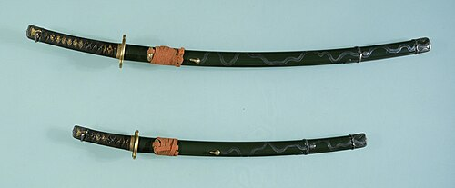
Montura de espada handachi en estilo daishō. Siglos XVI–XVII, período
Azuchi–Momoyama o período Edo.
Desde finales del período Muromachi (período Sengoku) hasta comienzos del período Edo, los samuráis
a veces llevaban una katana con la hoja apuntando hacia abajo, como una tachi. Este estilo de espada
se llama handachi, que significa “media tachi”. En el handachi, a menudo se mezclaban ambos estilos;
por ejemplo, la espada se sujetaba al obi (cinturón) al estilo de la katana, pero el trabajo
metálico de la vaina se realizaba al estilo de la tachi.
Durante el período Muromachi, especialmente en el período Sengoku, personas como campesinos,
habitantes de ciudades y monjes podían poseer una espada. Sin embargo, en 1588, Toyotomi Hideyoshi
prohibió que los campesinos poseyeran armas y llevó a cabo una “caza de espadas”, confiscándolas por
la fuerza a cualquiera que fuera identificado como agricultor.
La longitud de la hoja de la katana varió considerablemente a lo largo de su historia. A finales del siglo XIV y
principios del siglo XV, las hojas de katana solían medir entre 70 y 73 centímetros. Durante el inicio del siglo
XVI, la longitud promedio disminuyó aproximadamente 10 centímetros, acercándose a 60 centímetros. Para finales
del siglo XVI, la longitud promedio volvió a aumentar cerca de 13 centímetros, regresando aproximadamente a 73
centímetros.
Shintō (Nuevas Espadas)
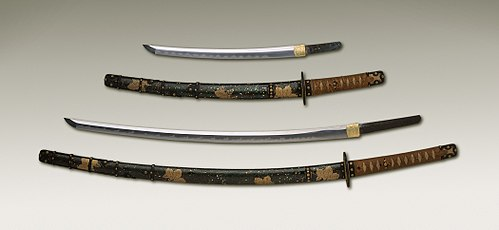
Antiguo daishō japonés, el tradicional conjunto de dos espadas japonesas
que era símbolo del samurái, mostrando las monturas tradicionales de espada japonesa
(koshirae) y la diferencia de tamaño entre la katana (abajo) y el wakizashi más pequeño
(arriba).
Las espadas forjadas después de 1596, en el período Keichō del período Azuchi–Momoyama, se
clasifican como shintō (“espadas nuevas”). Las espadas japonesas del período shintō son diferentes
de las kotō en el método de forja y en el acero utilizado (tamahagane). Se cree que esto ocurrió
porque la escuela Bizen, que era el grupo de herreros más grande de Japón, fue destruida por una
gran inundación en 1590, lo que hizo que el centro de producción se trasladara a la escuela Mino.
Además, como Toyotomi Hideyoshi logró prácticamente unificar Japón, comenzó a distribuirse acero
uniforme en todo el país.
Las espadas kotō, especialmente las fabricadas por la escuela Bizen durante el período Kamakura,
tenían un midare-utsuri, una especie de patrón parecido a una niebla blanca entre el hamon (línea de
templado) y el shinogi (cresta de la hoja). Sin embargo, en las espadas del período shintō, este
efecto prácticamente desapareció. Además, toda la hoja se volvió más blanquecina y dura. Durante
mucho tiempo casi nadie pudo reproducir el midare-utsuri, hasta que Kunihira Kawachi logró
reproducirlo en 2014.
A medida que terminó el período Sengoku (período de los estados en guerra) y comenzaron los períodos
Azuchi–Momoyama y Edo, la forja de katanas también se desarrolló hasta convertirse en un arte muy complejo y
respetado. Las saya (vainas) lacadas, los accesorios grabados ornamentales, las empuñaduras de seda y las tsuba
(guardas) elegantes se hicieron populares entre los samuráis durante el período Edo. Con el tiempo,
especialmente cuando Japón vivía en tiempos de paz, la katana pasó a ser más un objeto decorativo y ceremonial
que un arma práctica.
La escuela Umetada, dirigida por Umetada Myōju, considerado el fundador del período shintō, lideró
la mejora del arte de las espadas japonesas en esta época. Sus miembros eran tanto herreros de
espadas como trabajadores del metal, y eran famosos por tallar las hojas, fabricar accesorios
metálicos como las tsuba, transformar tachi en katana (suriage) y realizar inscripciones incrustadas
en oro.
Durante este período, el shogunato Tokugawa exigía que los samuráis llevaran katanas y espadas más
cortas en pares. Estas espadas cortas eran wakizashi y tantō, siendo el wakizashi el más común. Este
conjunto de dos espadas se llama daishō. Solo los samuráis podían llevar el daishō, ya que
representaba su poder social y su honor personal.
Los samuráis podían usar monturas decorativas en sus espadas en la vida diaria, pero el shogunato
Tokugawa regulaba la espada formal que debían usar al visitar un castillo. Esta debía ser un daishō
con vaina negra, empuñadura cubierta con piel blanca de raya y cordón negro.
Las espadas japonesas fabricadas durante este período se clasifican como shintō.
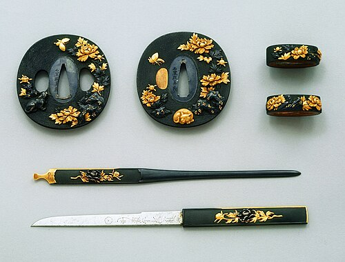
Accesorios de espada. Tsuba (arriba a la izquierda) y fuchigashira (arriba
a la derecha) hechos por Ishiguro Masayoshi en el siglo XVIII o XIX. Kogai (centro) y kozuka
(abajo) hechos por Yanagawa Naomasa en el siglo XVIII, durante el período Edo. Museo de Arte
Fuji de Tokio.
Shinshintō (Nuevas Nuevas Espadas)
Antiguo daishō japonés, el tradicional conjunto de dos espadas japonesas
que era símbolo del samurái, mostrando las monturas tradicionales de espada japonesa
(koshirae) y la diferencia de tamaño entre la katana (abajo) y el wakizashi más pequeño
(arriba).
A finales del siglo XVIII, el espadero Suishinshi Masahide criticó que las hojas de katana de la
época sólo enfatizaban la decoración y tenían problemas de dureza. Insistió en que la hoja kotō,
audaz y fuerte, desde el período Kamakura hasta el período Nanboku-chō, era la espada japonesa
ideal, y comenzó un movimiento para restaurar el método de producción y aplicarlo a la katana. Las
katanas hechas después de esto se clasifican como shinshintō. Uno de los espaderos más populares de
Japón en la actualidad es Minamoto Kiyomaro, activo durante este período shinshintō. Su fama se debe
a su excepcional habilidad atemporal, y fue apodado “Masamune de Yotsuya” tras su vida turbulenta.
Sus obras se vendieron a altos precios y se realizaron exposiciones en museos de todo Japón entre
2013 y 2014.
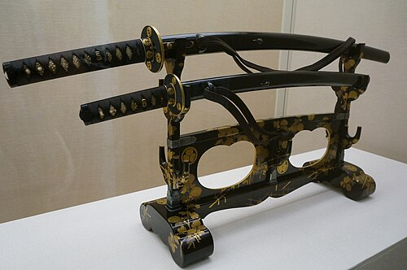
Montura daishō para vestimenta formal, con vaina negra, empuñadura envuelta
en hilo y forro de piel de raya blanca, reguladas por el shogunato Tokugawa. Daishō
perteneciente al clan Uesugi. Finales del período Edo.
La idea de que la hoja de espada del período Kamakura es la mejor se ha mantenido hasta hoy, y en el siglo XXI,
el 80 % de las espadas japonesas designadas como Tesoro Nacional fueron fabricadas en el período Kamakura, y el
70 % de ellas eran tachi.
La llegada de Matthew Perry en 1853 y la posterior Convención de Kanagawa provocaron caos en la sociedad
japonesa. Comenzaron a ocurrir conflictos frecuentes entre las fuerzas de sonnō jōi (尊王攘夷派), que querían
derrocar al shogunato Tokugawa y gobernar bajo el Emperador, y las fuerzas de sabaku (佐幕派), que querían mantener
el shogunato Tokugawa. Estos activistas políticos, llamados shishi (志士), luchaban usando una katana práctica,
llamada kinnōtō (勤皇刀) o bakumatsutō (幕末刀). Sus katanas eran a menudo más largas de 90 cm de hoja, menos curvas y
con una punta grande y afilada, lo que resultaba ventajoso para apuñalar en combates en interiores.
Gendaitō (espadas modernas o contemporáneas)
Meiji – Segunda Guerra Mundial
Durante el período Meiji, la clase samurái fue disuelta gradualmente y se le retiraron los
privilegios especiales que se le habían otorgado, incluido el derecho a portar espadas en público.
El Edicto Haitōrei de 1876 prohibió llevar espadas en público, salvo para ciertas personas, como
antiguos señores samuráis (daimyō), el ejército y la policía. En 1889, el ejército adoptó una espada
al estilo francés que podía manejarse con una sola mano. La katana se consideró inadecuada para la
guerra moderna porque requería ambas manos para usarse correctamente.
Los espaderos habilidosos tuvieron dificultades para ganarse la vida durante este período, mientras
Japón modernizaba su ejército, y muchos comenzaron a fabricar otros objetos, como herramientas
agrícolas, utensilios y cubiertos. El arte de fabricar espadas se mantuvo gracias al esfuerzo de
algunos individuos, notablemente Miyamoto Kanenori (1830–1926) y Gassan Sadakazu (1836–1918),
quienes fueron nombrados Artistas del Hogar Imperial. El empresario Mitsumura Toshimo (1877–1955)
trató de preservar sus habilidades encargando espadas y monturas de espada a los espaderos y
artesanos. Fue especialmente entusiasta en coleccionar monturas, reuniendo alrededor de 3,000 piezas
valiosas desde finales del período Edo hasta el período Meiji. Aproximadamente 1,200 de estos
objetos se encuentran hoy en el Museo Nezu.
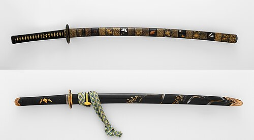
Monturas de katana decoradas con laca maki-e en el siglo XIX. Aunque la
cantidad de espadas forjadas disminuyó durante el período Meiji, se fabricaron muchas
monturas de gran calidad artística.
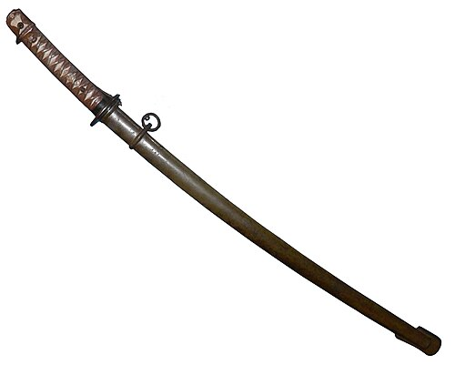
Tipo 95, guntō de la era de la Segunda Guerra Mundial.
La acción militar de Japón en China y Rusia durante el período Meiji ayudó a revivir el interés por
las espadas, pero no fue hasta el período Shōwa que se produjo un gran número de espadas nuevamente.
Las espadas militares japonesas producidas entre 1875 y 1945 se denominan guntō (espadas militares).
Durante el rearme previo a la Segunda Guerra Mundial y a lo largo de la guerra, todos los oficiales
japoneses debían portar una espada. Se produjeron espadas hechas de manera tradicional durante este
período, pero para abastecer la gran demanda, también se reclutaron herreros con poco o ningún
conocimiento del proceso tradicional japonés de forja. Además, las reservas de acero japonés
(tamahagane) eran limitadas, por lo que se usaron otros tipos de acero. Se implementaron métodos de
forja más rápidos, como el uso de martillos mecánicos y el enfriamiento de la hoja en aceite, en
lugar de forja manual y templado en agua. Las espadas no tradicionales de este período se llaman
shōwatō, por el nombre de era del Emperador Hirohito, y en 1937 el gobierno japonés comenzó a exigir
sellos especiales en la espiga (nakago) para distinguirlas de las espadas hechas de manera
tradicional.
Durante este período de guerra, también se volvieron a montar espadas antiguas para su uso militar. Actualmente,
en Japón, los shōwatō no se consideran "verdaderas" espadas japonesas y pueden ser confiscadas, aunque fuera de
Japón se recogen como objetos históricos.
Posguerra de la Segunda Guerra Mundial (1945–1953)
Entre 1945 y 1953, la fabricación de espadas y las artes marciales relacionadas con ellas estuvieron
prohibidas en Japón. Muchas espadas fueron confiscadas y destruidas, y los espaderos no podían
ganarse la vida. Desde 1953, se permitió a los espaderos japoneses trabajar, pero con severas
restricciones: debían estar licenciados, cumplir un aprendizaje de cinco años y solo los espaderos
con licencia podían producir nihontō (espadas japonesas). Cada espadero solo puede fabricar dos
espadas largas al mes y todas deben registrarse ante el gobierno japonés.
Fuera de Japón, algunas katanas modernas producidas por espaderos occidentales usan aleaciones de
acero modernas como L6 y A2. Estas espadas replican el tamaño y la forma de la katana japonesa y son
usadas por artistas marciales para iaidō e incluso para prácticas de corte (tameshigiri).
Se producen espadas de forma masiva, incluyendo iaitō y shinken con la forma de katana, disponibles
en muchos países, siendo China el principal productor. Estas espadas generalmente se fabrican en
serie y con una gran variedad de aceros y métodos.
Según la Asociación Parlamentaria para la Preservación y Promoción de las Espadas Japonesas,
organizada por miembros de la Dieta japonesa, muchas katanas distribuidas en el mundo en el siglo
XXI son espadas japonesas falsas hechas en China. El periódico Sankei Shimbun atribuye esto a que el
gobierno japonés solo permite a cada espadero fabricar 24 espadas japonesas por año para mantener la
calidad.
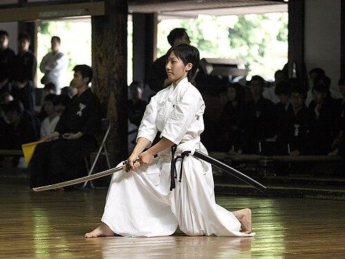
Chica japonesa practicando iaidō con una katana de entrenamiento moderna o
iaitō. Esta espada fue fabricada a medida en Japón para adaptarse al peso y tamaño de la
estudiante. La hoja está hecha de aleación de aluminio y carece de filo por razones de
seguridad.
Muchos espaderos posteriores al período Edo han intentado reproducir la katana del período Kamakura, considerada
la mejor espada en la historia japonesa, pero habían fracasado. En 2014, Kunihira Kawachi logró reproducirla y
ganó el Premio Masamune, el máximo honor para un espadero. Nadie podía ganar el Premio Masamune a menos que
lograra un logro extraordinario; en la categoría de tachi y katana, nadie lo había ganado durante 18 años antes
de Kawachi.
Tipos
Las katanas se distinguen por el tipo de hoja:
Shinogi-Zukuri es la forma de hoja más común para las katanas japonesas, ya que proporciona
tanto velocidad como poder de corte. Presenta un yokote distintivo: una línea o bisel que separa
el acabado de la hoja principal del acabado de la punta. Shinogi-zukuri se produjo originalmente
después del período Heian.
Shobu-Zukuri es una variación de shinogi-zukuri sin yokote, es decir, sin el ángulo definido
entre el filo largo y la sección de la punta. En su lugar, el filo se curva suavemente y sin
interrupciones hacia la punta.
Kissaki-Moroha-Zukuri es una forma de hoja de katana con una distintiva hoja curva y de doble
filo. Un lado de la hoja tiene la forma normal de una katana, mientras que la punta es simétrica
y ambos bordes de la hoja están afilados.
Además de estas, existen varios otros tipos de hojas con diferentes formas, como Osoraku-zukuri,
Unokubi-zukuri y Kammuri-otoshi-zukuri.
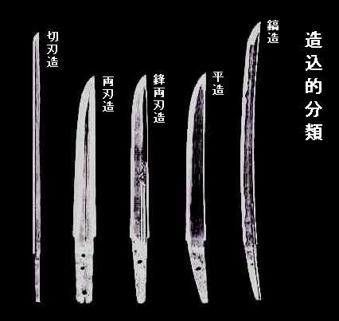
Kiriha-zukuri, Moroha-zukuri, Kissaki-moroha-zukuri, Hira-zukuri y
Shinogi-zukuri (de izquierda a derecha). La de la izquierda es un chokutō y las tres del
medio son tantō.
Forjado y Construcción
Las características típicas de las espadas japonesas representadas por la katana y el tachi incluyen
una forma transversal tridimensional de la hoja, de pentagonal alargada a hexagonal, llamada
shinogi-zukuri, un estilo en el que la hoja y la espiga (nakago) se integran y fijan al mango
(tsuka) con un pasador llamado mekugi, y una ligera curvatura. Cuando se observa una espada
shinogi-zukuri de lado, se distingue una línea de cresta en la parte más gruesa de la hoja llamada
shinogi, entre el filo y el dorso. Este shinogi contribuye a aligerar y endurecer la hoja y a
aumentar su capacidad de corte.
Las katana se fabrican tradicionalmente con un acero japonés especializado llamado tamahagane,
creado mediante un proceso de fundición tradicional que produce varias capas de acero con diferentes
concentraciones de carbono. Este proceso ayuda a eliminar impurezas y a uniformar el contenido de
carbono del acero. La antigüedad del acero influye en la capacidad de eliminar impurezas, ya que el
acero más antiguo tiene mayor concentración de oxígeno, se estira con más facilidad y permite
eliminar impurezas durante el martillado, resultando en una hoja más resistente. El maestro herrero
comienza doblando y soldando varias veces los bloques de acero para nivelar la composición, y luego
se estira para formar un bloque alargado.
En esta etapa, la hoja presenta poca o ninguna curvatura. La curvatura característica de la katana
se obtiene mediante un proceso de endurecimiento diferencial o templado diferencial: el herrero
cubre la hoja con varias capas de una mezcla de arcilla húmeda, compuesta generalmente de arcilla,
agua y a veces ceniza, polvo de piedra o óxido de hierro. Esta técnica se llama tsuchioki. El filo
se cubre con una capa más delgada que los lados y el dorso, se calienta y luego se enfría
rápidamente en agua. Esta arcilla endurece solo el filo y provoca la curvatura debido a las
diferencias en la densidad de las microestructuras del acero.
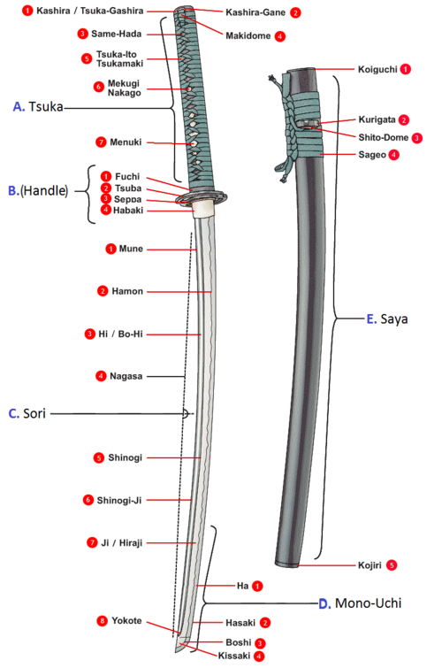
Partes nombradas de la katana.
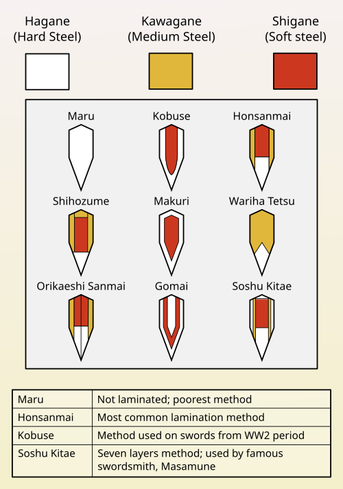
Secciones transversales de los métodos de laminado de las hojas de espadas
japonesas.
Cuando el acero con un 0,7 % de carbono se calienta por encima de 750 °C, entra en fase austenita.
Al enfriarse rápidamente mediante el templado, la estructura se transforma en martensita, un acero
muy duro. Si se enfría lentamente, se forma una mezcla más blanda de ferrita y perlita. Este proceso
también crea la línea a lo largo de los lados de la hoja llamada hamon, que se distingue mediante
pulido. Cada hamon y cada estilo de hamon de un maestro herrero es único. La parte blanca visible no
es el hamon en sí, sino la zona resaltada mediante el pulido llamado hadori; el hamon real es una
línea difusa dentro de esta área blanca y se aprecia mejor al cambiar el ángulo de luz sobre la
hoja.
Después del forjado, la hoja se pule, proceso que puede durar entre una y tres semanas. El pulidor
utiliza piedras de diferentes granos en un procedimiento llamado glazing hasta obtener un acabado
espejo. El filo sin cortar a menudo recibe un acabado mate para resaltar el hamon.
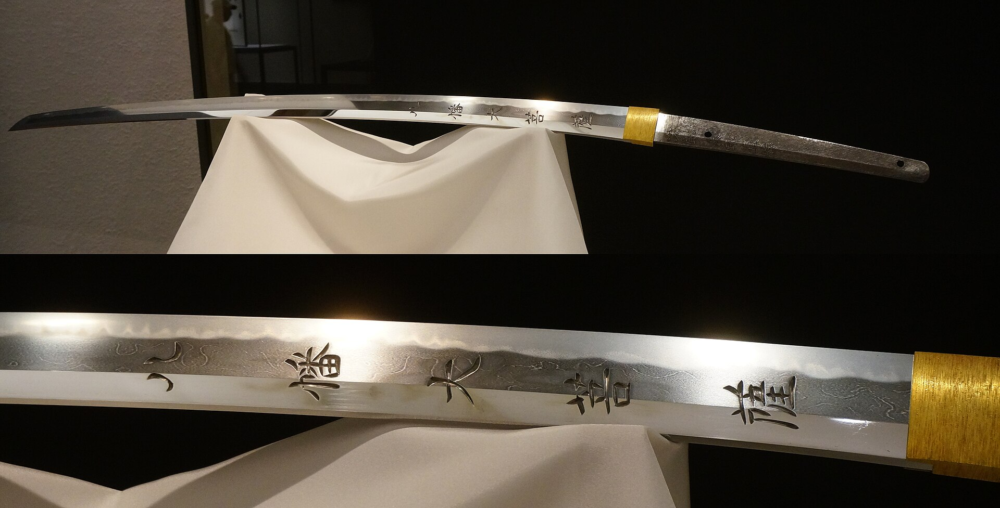
Ejemplo de un hamon. No es toda el área blanca llamada hadori, sino una
línea difusa dentro del hadori. Es difícil de fotografiar y, para apreciarlo
correctamente, el observador debe sostener la espada en la mano y cambiar el ángulo de
la luz sobre la hoja mientras la mira.
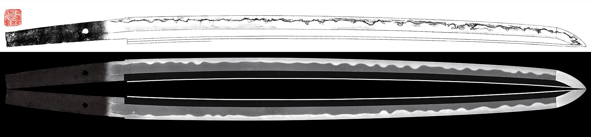
Diferencia entre oshigata (arriba), una copia exacta del hamon, y la
fotografía (abajo).
La fabricación de espadas japonesas se realiza generalmente mediante una división del trabajo entre seis y
ocho artesanos: el tosho (katana-kaji) forja las hojas; el togishi se encarga del pulido; el kinkōshi
(chokinshi) fabrica herrajes; el shiroganeshi produce el habaki (collar de la hoja); el sayashi fabrica las
vaina; el nurishi aplica laca a las vainas; el tsukamakishi hace los mangos y el tsubashi realiza las tsuba
(guardas). Los tosho suelen trabajar con aprendices como asistentes. Antes del período Muromachi, los tosho
y los kacchushi (armeros) fabricaban tsuba con metal sobrante, pero a partir de esa época, se especializaron
artesanos dedicados a las tsuba. Actualmente, los kinkōshi a veces realizan también las funciones de
shiroganeshi y tsubashi.